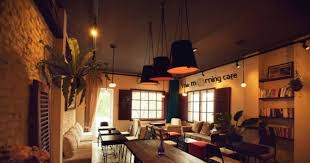
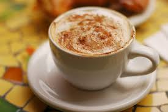
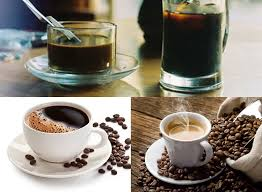
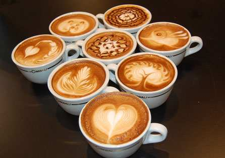

アクセスマップ
tra sua

den voi quan de thuong thuc mon tra sua ngon nhat hien nay nhe
所在地：〒812-0012 福岡県福岡市博多区博多駅中央街１?１
電話： 092-451-8883
営業時間：10:00 ～ 23:30
はじめまして。tra sua と申します。 数あるコーヒー屋さんの中から、当店へお越し頂き、大変嬉しく思います。 仕事中や勉強中、運転中など、様々な場面で私たちは眠気に襲われます。 私なんか今まさにこの記事を書きながらウトウトしているくらいです。でも大丈夫。 睡魔に襲われたときに私たちを助けてくれるを淹れているので！ そうです。ご存知の通りコーヒーには眠気を覚ます覚醒効果があります。 だから多くの人が眠気に襲われたときにコーヒーを飲むんですね。 ところで、ホットコーヒーとアイスコーヒーのどちらがより眠気に 対抗できるのかご存知ですか？実はホットコーヒーのほうが眠気を 覚ますのには効果的なんです。今回はなぜホットコーヒーのほうが アイスコーヒーよりも眠気を覚ますことができるのかを紹介したい と思います！
   | 定番商品 | 価格 |
|---|---|
| カフェ。ラテ | 490円 |
| 沖縄黒糖ラテ | 450円 |
| ロイヤルミルクティー | 490円 |
| ブレンドコーヒー | 440円 |
| ホット黒糖ラテ | 390円 |
| ホット黒糖ミルク | 390円 |
den voi quan de thuong thuc mon tra sua ngon nhat hien nay nhe
所在地：〒812-0012 福岡県福岡市博多区博多駅中央街１?１
電話： 092-451-8883
営業時間：10:00 ～ 23:30